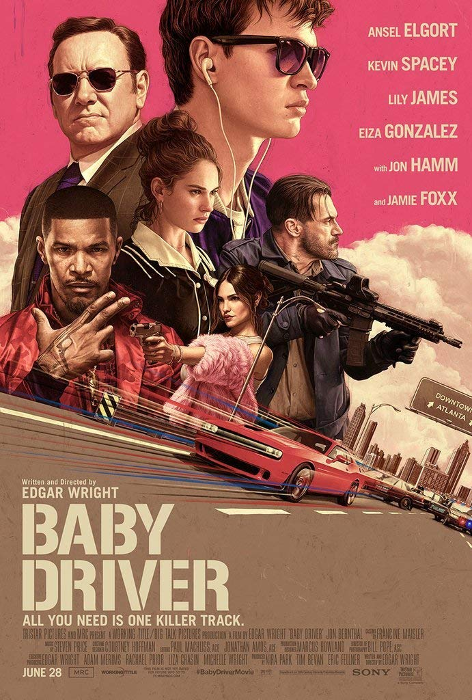
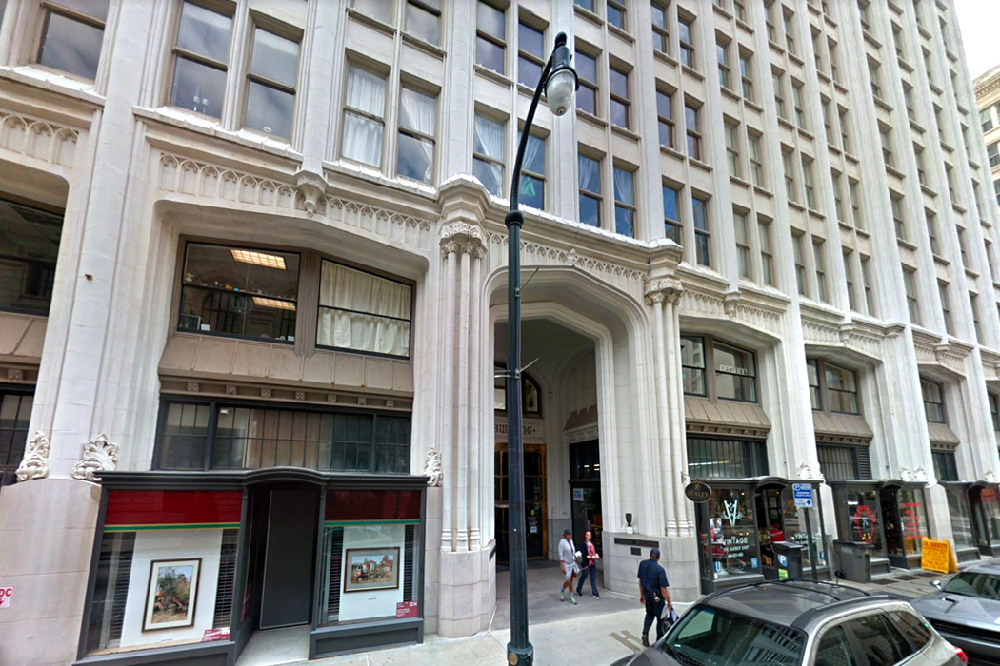
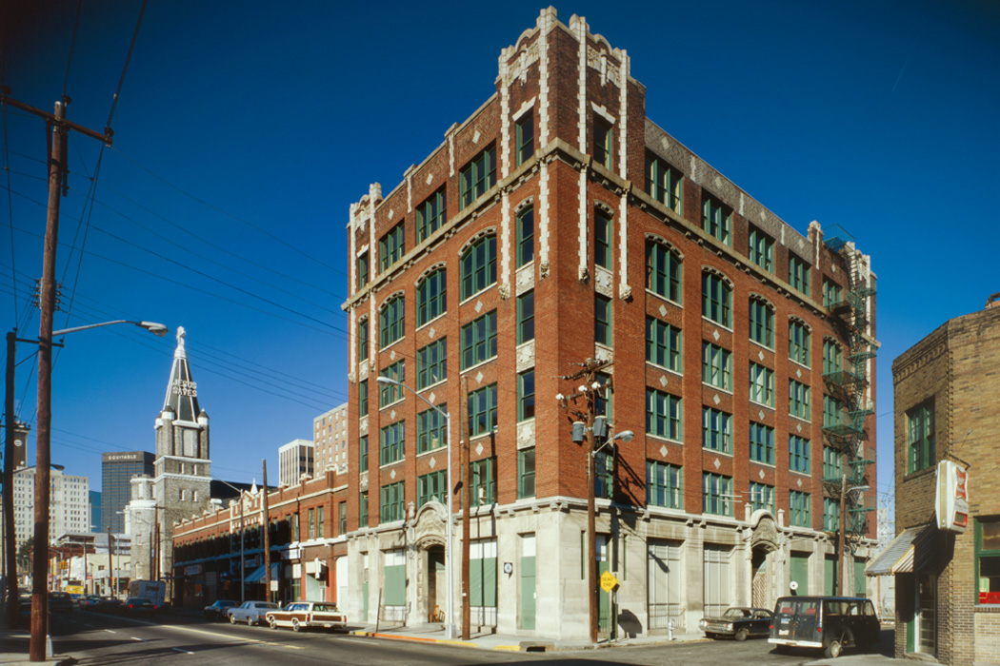
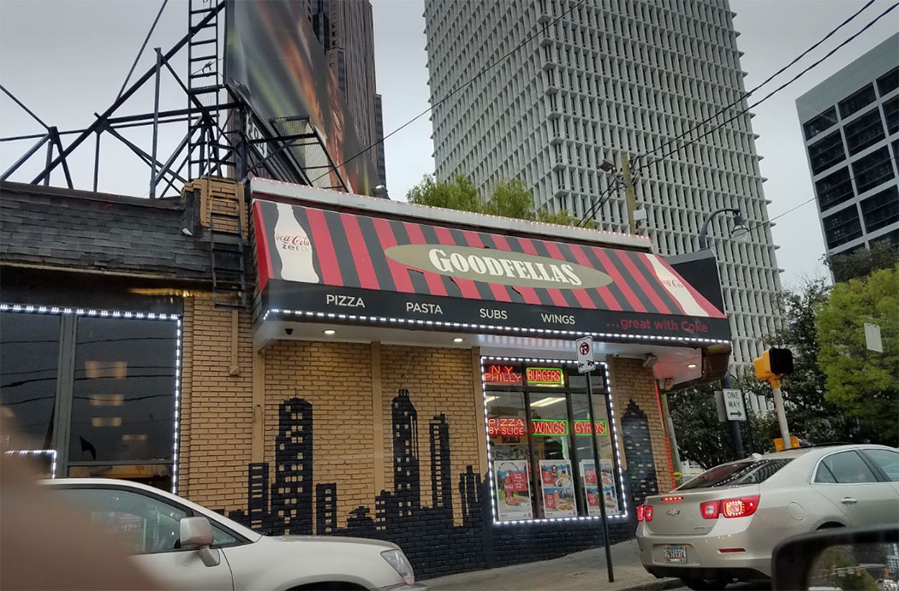
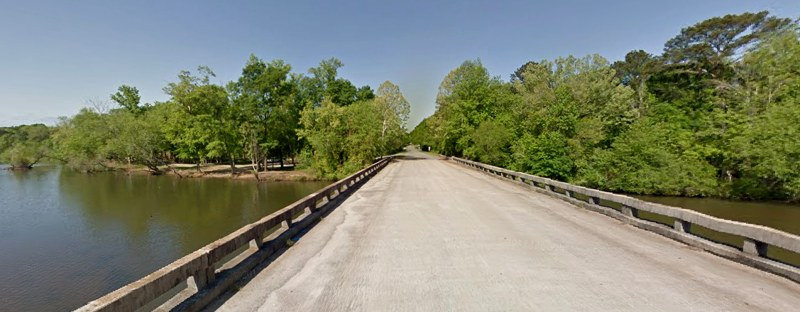
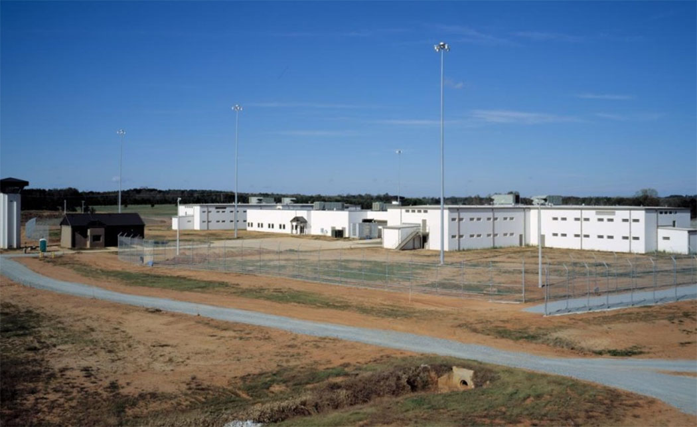

Most Viewed
Baby Driver

Synopsis:
Baby, a music-loving orphan also happens to be the prodigiously talented go-to getaway driver for heist mastermind Doc. With the perfect soundtrack picked out for each and every job, Baby ensures Doc's violent, bank-robbing cronies - including Buddy, Bats and Darling - get in and out of Dodge before it's too late. He's not in it for the long haul though, hoping to nail one last job before riding off into the sunset with beautiful diner waitress Debora. Easier said than done.The titular driver is Baby (Ansel Elgort), a young guy with prodigious road skills who’s in hoc to Doc (Kevin Spacey) after once having stolen the crime boss’s Merc and its valuable contents. He mimes along with the track outside 140 Peachtree Street Northwest while the gang helps itself to the contents of the bank opposite.
The ‘bank’ is the Candler Building, 127 Peachtree Street Northeast – though it’s the entrance around the corner on Houston Street that’s seen in the film – and Baby’s skills are amply demonstrated as he unexpectedly reverses before heading west toward Cone Street NW and to Marietta Street NW.
At Marietta, he turns west onto Centennial Olympic Park Drive. Baby artfully avoids a spike strip deployed at Centennial Olympic Park Drive and Martin Luther King Jr Drive Southwest, alongside the Atlanta Falcons’ new (2017) Mercedes Benz Stadium, which you can glimpse still under construction.
Baby follows this by pulling a neat spin on the old Find-The-Lady trick with two identical red Subarus driving through the tunnel on the Downtown Connector, I-75/85 Northbound, beneath the junction of Capitol Avenue Southwest and Memorial Drive Southwest.
As the police ‘copter is faced with deciding which vehicle to follow, Baby peels off left at Junction 248D, John Portman Boulevard NE.
The chase ends with Baby squeezing through the narrow alleyway between 3rd Street NW and 4th Street NW, alongside the parking garage at 721 Spring Street Northwest, coolly avoiding the cop car trundling unwittingly along 4th Street NW, and pulling into the garage, where the crew is finally able to switch cars.
Wright goes on to top this with a bravura credits sequence which involves nothing more dramatic than Baby leaving the safe house to get coffee for the team.
 Healey Building, Forsyth Street Northwest, Atlanta  Odd Fellows Building, Auburn Avenue Northeast, Sweet Auburn, AtlantaThe otherwise blameless Baby, haunted by the death of his mother in an auto accident, lives with his ailing and deaf stepdad Joseph (CJ Jones) in the handsome six-storey Odd Fellows Building, 250 Auburn Avenue Northeast in Atlanta's Sweet Auburn Historic District.
Not only that, he combats tinnitus with a relentless flow of music from his ever-present earbuds.
Baby lives his life through songs so, when he catches Debora (Lily James), a server in his local diner, casually singing a snatch of an unfamiliar number, coincidentally called Baby, he’s hooked.
The two bond over their respective ‘name’ songs with Debora revealing that she’s never heard the T Rex (and not Trex) song which bears her name.
‘Bo’s Diner’ is the film’s only set, built in an old abandoned Denny’s at 5116 GA-85, Forest Park. It was subsequently restored to become Uncle Chucky’s Diner but that now too seems to have closed.
Baby naturally hares off to track down a copy of the unknown track – Carla Thomas’s 1966 B-A-B-Y – at the wonderfully named Criminal Records, 1154 Euclid Avenue Northeast.
This lull is soon interrupted by a call from Doc, alerting Baby that there’s another job in the offing. The upside is, after this one, he’ll be all square with Doc and free to carry on with his own life.
As usual for Doc, there’s – apart from Baby – an entirely new crew: Eddie No-Nose (Flea), JD (Lanny Joon) and Bats (Jamie Foxx).
And, of course, a new target: the ‘Perimeter Trust’, which is 84 Perimeter Center East, in Perimeter Center, an ‘edge city’ about ten miles north of Downtown Atlanta.
The Mike Myers disguises sported by the gang were a fortuitous last-minute gag when it proved too costly to get the copyright for Michael Myers Halloween masks.
Things don’t go so smoothly this time as a concerned citizen not only starts firing back but gives chase to Baby and the crew as the head north on Ashford Dunwoody Road NE (oddly, away from Atlanta)
The subsequent chase takes place on the Buford-Spring Connector, a local short-cut running alongside SR13 north of the city, which was possible to close down for filming.
Their pursuer, ‘GI Joe’, is forced off the road on Freedom Parkway NE just east of I-75/85 near the Jackson Street Bridge, while Baby crashes down onto Andrew Young International Boulevard NE.
Stalled in traffic, the gang hijacks a car from a mother and baby at the junction with Piedmont Avenue Northeast.
After heading west up Andrew Young International Boulevard NE, Baby makes a sudden turn east, under the elevated walkways on John Portman Boulevard NW and into the parking garage of Americas Mart Atlanta, 75 John Portman Boulevard, for another vehicle swap.
In the confusion JD has left behind his shotgun – a mistake he soon regrets. Baby’s final gruesome task before being free of debt is to take the car containing JD’s body to the crusher at C&L Used Auto Parts, 570 Glenn Street Southwest.
Believing his criminal career is behind him, Baby introduces Debora to the T Rex track during a quirkily romantic interlude as the coloured washes churn in the pop-arty Splash Laundromat, 2459 Piedmont Road Northeast.
Encouraged by his stepdad, Baby takes an adrenaline-free straight job as a pizza delivery driver for Goodfellas Pizza, 615 Spring Street Northwest.
 Goodfellas Pizza, Pizza, 615 Spring Street NorthwestEarning money for himself, Baby is able to treat Debora to a swanky night out at Bacchanalia, which then stood at 1198 Howell Mill Road Northwest. Though still in business, in early 2017 Bacchanalia moved to new premises a little northwest at 1460 Ellsworth Industrial Boulevard.
There’s a spectre at the Bacchanalian feast in the shape of Doc, who’s not about to let go of his great asset so easily. He appears outside the restaurant to make Baby an offer it would be tough to refuse: “Behind the wheel or in a wheelchair.”
On this downer, Baby glumly drives Debora home to her place at the Myrtle Street Apartments, 921 Myrtle Street Northeast, Midtown.
Before the job, the team needs to stock up on firepower from a shady character known as The Butcher (Paul Williams) in a huge deserted warehouse that native Atlantans and movie buffs will recognise as the old Pratt-Pullman Yard, Rogers Street Northeast at DeKalb Avenue NE on Atlanta’s Near-Eastside.
Once a repair facility for Pullman train cars, the site is now owned by the state. Scenes for both Justin Lin’s 2011 Fast Five, more recognisably renamed Fast and Furious 5, and The Hunger Games: Catching Fire were also filmed here.
The abortive deal ends in a bloody shoot out when trigger-happy Bats senses that the sellers are cops.
The job itself is to hit, not a bank, but a US post office for a lucrative stash of money orders. The PO exterior is Dahlberg Hall, 30 Courtland Street Southeast.
The interior, scoped out by Baby and Doc’s sharp-as-a-tack nephew, really is – or was – a bank, but quite a distance away. It’s the former Regions Bank building at 111 Green Street Southeast, Gainesville on I-985, several miles northeast of AtlantaWaiting at the rear of the ‘Post Office’, Baby sees the friendly teller he’d spoken to during the recce and tries to warn her off – which sets off a whole chain of catastrophes which leave Bats dead and Baby having to escape on foot through The Mall at Peachtree Center.
The mayhem climaxes with a ferocious showdown between Baby and the psychotic Buddy (Jon Hamm) in the Georgia World Congress Center Parking Garages, 103 Mangum Street Southwest. Is it a spoiler to reveal that this is a high-rise parking structure? Sorry.
After some unexpected help from the suddenly-sympathetic Doc, Baby and Debora make a brave stab at escaping to a new life on the road, but can’t avoid the police roadblock on the Jerry Wadley Memorial Bridge, Juliette, way to the southeast on I-75.
 Jerry Wadley Memorial BridgeA stream of sympathetic commendations from witnesses means Baby’s sentence isn’t as savage as it might have been, and he’s bundled off to Georgia’s Department of Corrections, with the possibility of parole in five years.
Time served, he’s met by Debora outside the gates of Georgia Diagnostic and Classification State Prison, 2978 Highway 36 West, Jackson.
 Georgia Diagnostic and Classification State Pision